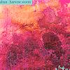

Celtic Lyrics Corner > Artists & Groups > Altan > Harvest Storm > Mo Choill
|  | Mo Choill |
| Credits : | Traditional; arranged by Altan |
| Appears On : | Harvest Storm |
| Language : | Gaeilge (Irish Gaelic) |
| Lyrics : | English Translation : |
| Tá taistealaí breá in sa tír | There's a gentleman in this land |
| 'S tá se scríofa ar a bord | It's recorded on the board |
| Chuir me litir in sa phost | I've sent a letter by post haste |
| Agus gealltanas a post' | To pledge my love and married bliss |
| Curfá : | Chorus (after each verse) : |
| 'S tú mo choill, choill, choill | You're my love, love, love |
| 'S tú mo choill gaineach ban | You're my loved one so fair |
| 'S tú mo ghiolla dubh ar luaimh | You're my dark sailor boy |
| Os ar ucht tú 'bheith slan | And I wish for your care |
| Tiocfaidh'n long in sa chuan | A ship to the bay |
| 'S cuirfidh sí suas na driúrlann | Sets the casks on the rails |
| Nuair a shilfeas a' fíon | When the wine's drained away |
| Beidh an long ar a' trádh | She'll be ready to sail |
| Ó, níl agam ar a' t-saol | In all this wide world |
| Ach an aon fear amháin | There is one man I care |
| A chuir Aoife faoi shiúil | Whom Aoife dismissed |
| 'S ar bord an "Man-of-War" | And put on board the "Man-of-War" |
| Nuair a théimse faoi shiúil | I journeyed away |
| 'S d'fhág mo rún leabaí fáin | And my love's bed reneged |
| Nuair a chuala mé mo rún | When I heard that my love |
| A bheith ar chúl na dtonn tréann | Was abroad on the waves |